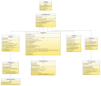

An advanced Imaging widget for Java Swing applications
[Home] [Download] [F.A.Q.] [Java API] [General Usage] [Advanced Topics] [SF Project]
An advanced Imaging widget for Java Swing applications
[Home] [Download] [F.A.Q.] [Java API] [General Usage] [Advanced Topics] [SF Project]To have Shimaging display an image, you'll need three objects. These are an ImageSource, an ImageModel, and an ImagePanel. For the purposes of this simple use guide, we'll stick with using the ImageIO framework (added in JDK 1.4) and loading a simple JPG image. The following code is a good example of how this can be done, and is included in the 'examples' directory of the Shimaging distribution and subversion repository.
1: ImageSource source = new ImageIOSource(new File("resources/sample.jpg"));
2: ImageModel model = new ImageModel(source);
3: ImagePanel iPanel = new ImagePanel(model);
Container.add(iPanel); // Add the ImagePanel to a Container instance.
[1] Create an ImageIOSource. This class uses the ImageIO framework to load the specified jpg. [2] Create a model for the image. The model is what holds the state for the image, and is what we can use to rotate, zoom, rescale, etc. [3] Create the ImagePanel. This is the Swing widget (complete with JToolbar) that we can embed in an AWT Container -- for example, a JPanel.
ImageIOSource can load images for any registered ImageIO decoder from File, URL, InputStream, and ImageInputStream objects.
Warning: These images are very large!
|
 MVC Class Diagram |
 ImageSource Inheritance |
1: public class MyFrame extends JFrame {
2: ImagePanel iPanel;
3: JMenuBar mnuBar;
4: public void MyFrame() {
5: super("A simple JFrame with a menu bar and an ImagePanel");
6: iPanel = new ImagePanel();
7: setContentPane(iPanel); // This is a way of setting the ImagePanel as the contents of a JFrame.
8: mnuBar = new JMenuBar();
9: mnuBar.add(iPanel.getMenu());
10: setJMenuBar(mnuBar);
11: }
12:}
The created menu will automatically be updated as the JToolbar buttons are updated, enabling and disabling the proper menu items.
Dealing with multi-page TIFF files was the reason Shimaging was originally created. There are a few classes that will let you work with TIFF Images easily, using JAI-core to load all the pages of the Image. The simplest case of loading a TIFF image from a file...
1: File f = new File("path_to_tiff");
2: ImageSource source = new JAITiffImageSource(f);
// ... Construct an ImageModel & ImagePanel as usual
Of course, JAITiffImageSource also allows for loading from an InputStream. This opens up the possibility of using URL.openStream() to load remote objects.
{kind=link}
{kind=link}